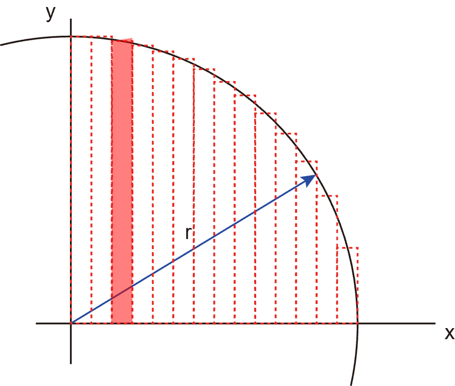

円周・円の面積の求め方，楕円の面積の求め方
次はまっとうな積分で，面積を考えていきます．
・円の面積

円の公式から，
\( \Large \displaystyle x^2 + y^2 = r^2 \)
ですので，
\( \Large \displaystyle y = \sqrt{ r^2 - x^2} = r \cdot \sqrt{1 - \left( \frac{x}{r} \right)^2} \)
1/4円を考えると，このｙの値をｘについて，0～ｒまで積分すればいいことになります．
\( \Large \displaystyle S_{1/4} = \int_0^ r r \cdot \sqrt{1 - \left( \frac{x}{r} \right)^2} dx \)
ここで，
\( \Large \displaystyle x = r \cdot cos \ \theta \)
とすると，
\( \Large \displaystyle \frac{x}{r} = cos \ \theta \)
\( \Large \displaystyle dx = - r \cdot sin \ \theta \ d \theta \)
積分範囲は，
\( \Large \displaystyle 0 \sim x \sim r \)
\( \Large \displaystyle \frac{ \pi}{2} \sim \theta \sim 0 \)
となるので，
\( \Large \displaystyle S_{1/4} = - \int_{\frac{ \pi}{2}}^0 r \cdot \sqrt{1 - cos^2 \ \theta} \cdot r sin \ \theta \ d \theta \)
\( \Large \displaystyle = - r^2 \int_{\frac{ \pi}{2}}^0 sin^2 \ \theta \ d \theta \)
\( \Large \displaystyle = r^2 \int_0^{\frac{ \pi}{2}} sin^2 \ \theta \ d \theta \)
\( \Large \displaystyle = r^2 \int_0^{\frac{ \pi}{2}} \frac{1 - cos \ 2 \ \theta}{2} \ d \theta \)
\( \Large \displaystyle = r^2 \left[ \frac{ \theta}{2} -\frac{1}{2} sin \ 2 \theta \right]_0^{\frac{ \pi}{2}}\)
\( \Large \displaystyle = r^2 \frac{ \pi}{4} \)
これが1/4円の面積となるので，
\( \Large \displaystyle S = 4 \cdot r^2 \frac{ \pi}{4} = \pi r^2 \)
と公式を導き出すことができました．
この手法を用いると楕円の面積も求めることができます．
次ページに，楕円の面積の解説をします．